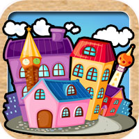
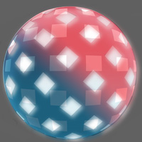
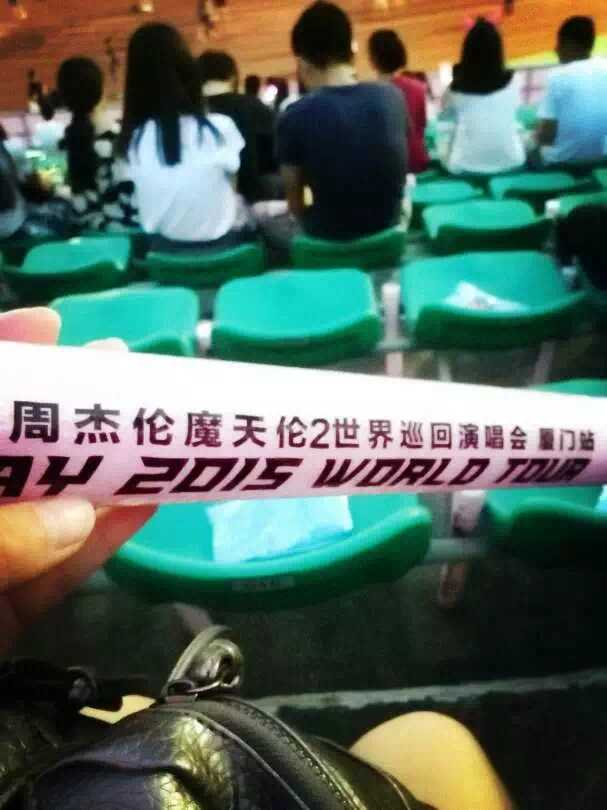
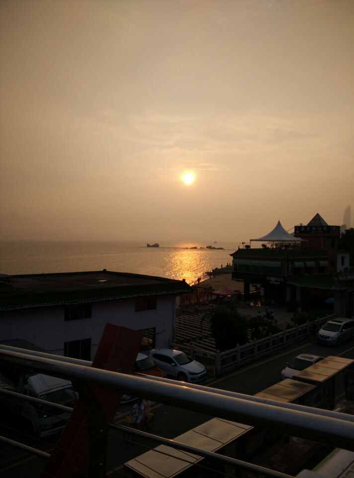
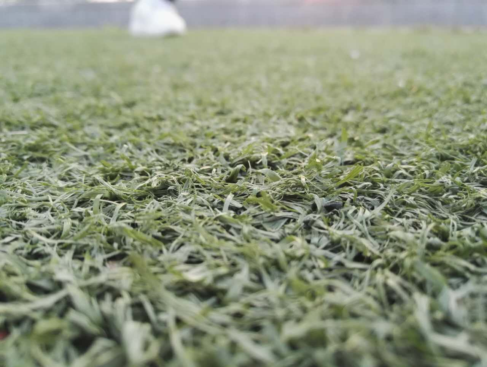
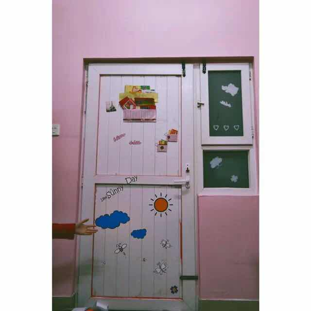
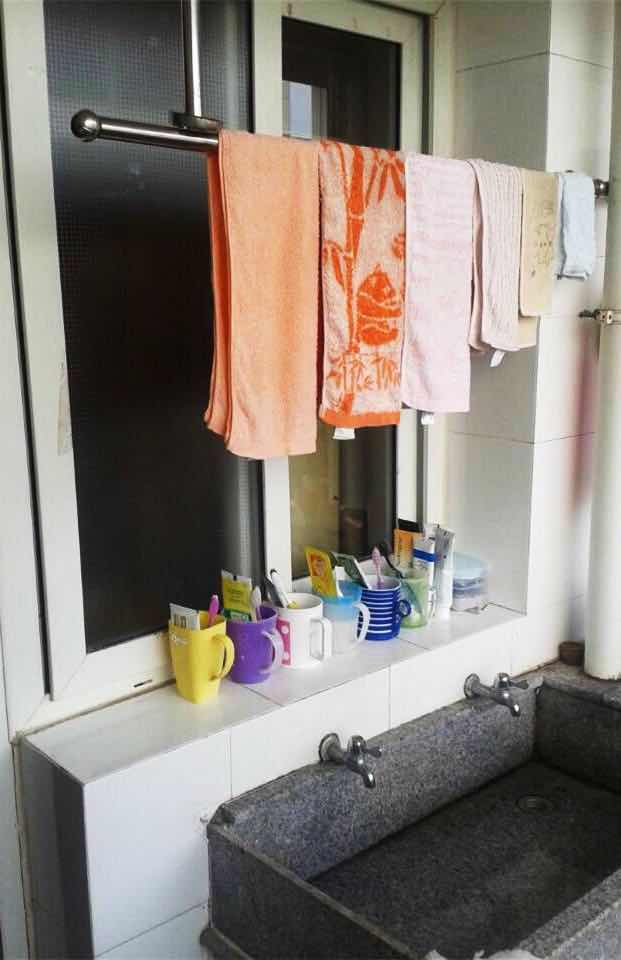
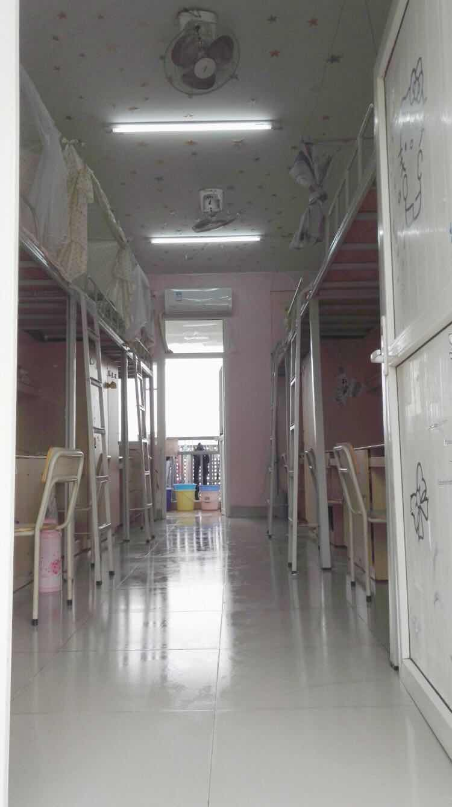

{kind=link}
Running man
最爱的家族
我，是广东人最爱吃的福建人；在中国文艺之都-厦门上学。作为一名工科类中的“艺术生”，但我却喜欢用文字来记录自己的生活。作为小说狂热者，我有一个小梦想那就是希望有一天我能有一本属于我自己的书。拍照，也是我生活中不可或缺的一部分，渣技术的我却有着有一天能够拿着照相机提上我的保温杯说走就走的旅行的梦。
Photoshop 3Dmax Premiere Adobe Illustrator AfterFXPortable...这些我通通都只是会一点
还会那么一点点的画画，摄影。但也就是会那么一点点

时间就像是坐了哆啦A梦的时光机，嗖的一下从他那个抽屉里就这样溜走了。
2014年9月15日，那是我们第一次见面。那时候的我们总觉得时间还很长，毕业对于我们而言还是那么遥远的一件事。我们谈天说地，撸串聚餐，就这样懵懵懂懂的走过了大一生活。大二的我们似乎更加忙碌了，迎新生似乎成了我们最想做的事情。看看这个学弟瞧瞧那个学妹，享受着学姐这两个字所带给我们不明所以的愉悦心情。大三我们开始抓住大学的尾巴，该玩玩该喝喝，一边担忧着未来一边又安慰自己及时行乐。偶然翻开大一时候的相册才想起大一，似乎是遥远的事情了。就在迈进大四的那一天我们一瞬间变成了大人，我们开始有了找工作的烦恼，开始有了柴米油盐的琐事，也开始有了毕业的伤感。转眼六月，这个属于我们的毕业季就来了。
来时路上，谢谢曾有你们同行
《running man》
最爱的家族

我们永远的mc
wuli孝顺的国儿，赶紧找女朋友吧
作为最年长的你，却依旧在尽自己最大的努力奔跑
巾帼不让须眉，懵智，金智孝。无论哪一个都是我最爱的你
小个，搞笑一直是我们对你的标签。但是作为两个孩子的爸爸，伟岸就是你的身份
我们傻傻呆呆一直被综艺之神光顾的李光洙啊，你要一直一直跑下去
虽然你已经不在running man了但是你一直都是我心中的7012

疯疯癫癫的你却带给我们很多的快乐
金钟国的另一个小跟班，有着想要淘汰金钟国的心却没有这个胆
一直奔跑下去是我们最大的心愿
7012 不见不散
小说，作业，出游和宿舍，这就是我的大学四年。没有那么多的弯弯绕绕，我们就这样误打误撞的进入彼此人生中的四年。 大一青涩，大四老城，看似不重要的四年却是我们成长的重要轨迹。所幸我们还没有怎么变还是那样冒冒失失，傻傻呼呼。
愿未来的你们，归来仍是少年！
《十年一品温如言》书海沧生
这是他们的故事,一种爱,两个轻转流年,吹散的,只有孙儿手中的小风车… 谁是谁非,不过,呵呵一笑,十年含烟,梦醒时,揉揉眼睛,少年此间,哪个曾经温如言。
《怨气撞铃》尾鱼
一串只能被死人怨气撞响的风铃一段永远看不到终点的漂泊旅途
《那个不为人知的故事》Twentine
你知道么,这世上有很多不被接受的种子,都在不为人知的角落,开成了花。
logo-游戏图标
中国油画院logo
网站logo
大一，第一次看演唱会
大二，集体出动曾厝垵
大三，校园一角
粉嫩的颜色，一如当初嫩生生的我们
每天我们聚在这里刷牙洗衣，以后怕是再也没有这样的机会了
如此干净的宿舍一如当初我们来时，又如未来我们走后
{kind=link}
{kind=link}
{kind=link}
{kind=link}
{kind=link}
{kind=link}
{kind=link}
{kind=link}